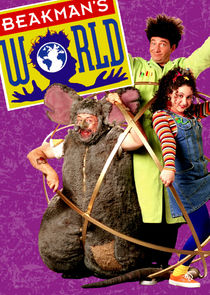
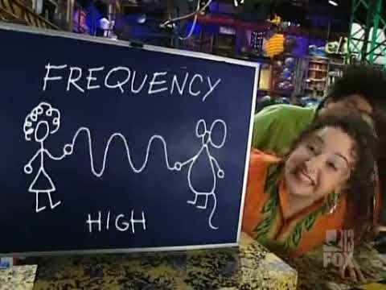
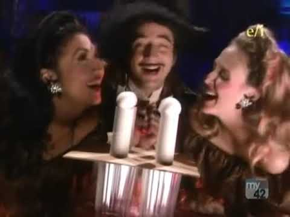

Beakman’s World



Details
My notes
Beakman’s World.
About the show
A children’s science series that began in 1992. Paul Zaloom plays Beakman, an eccentric scientist who answers questions about science, nature, and how everyday things work.
What happens in it
Experiments, demonstrations, jokes, and physical comedy turn viewers’ questions into explanations. Beakman is joined by assistants and Lester, the rat-costumed character.
Memory status
Added by name. The channel, viewing years, and particular episodes you remember have not been recorded yet.